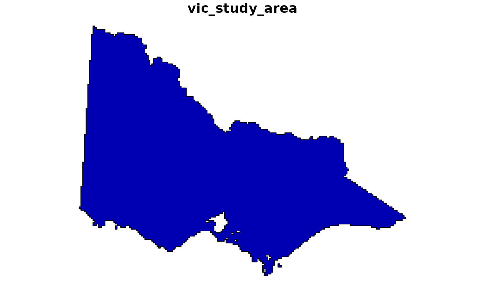
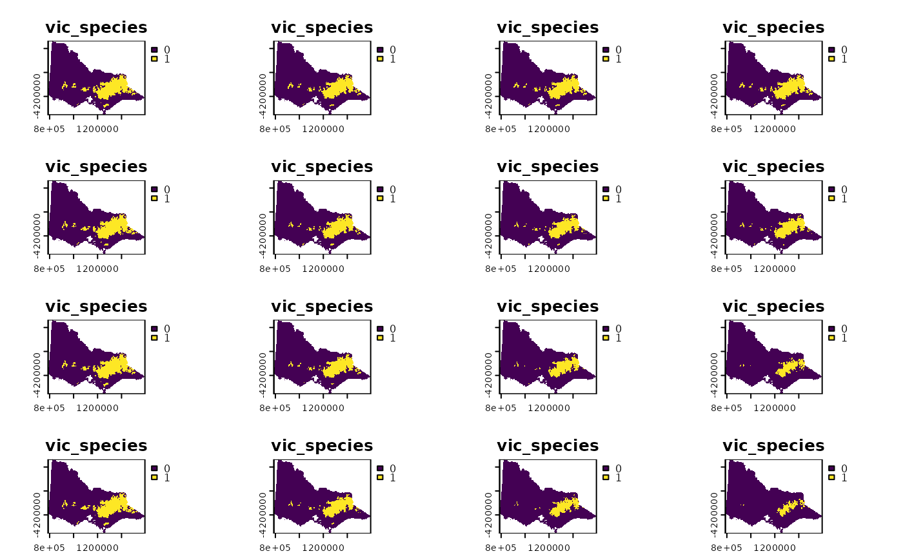
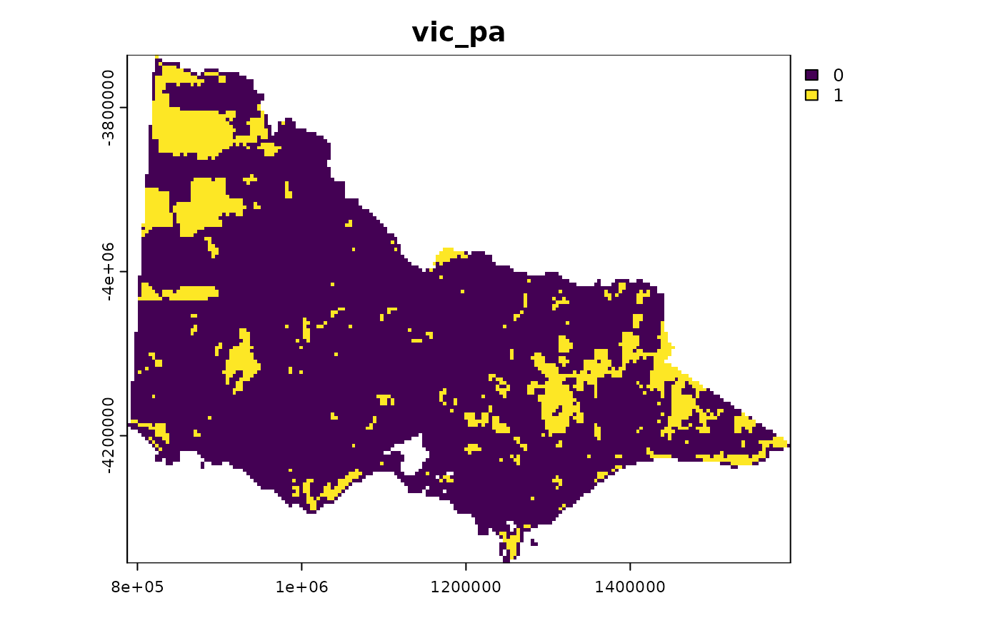
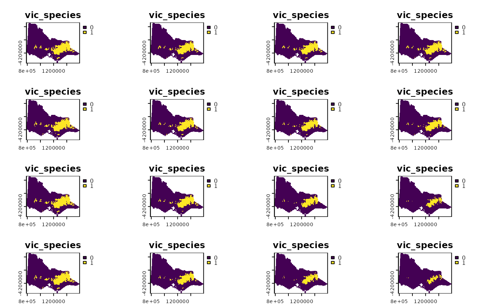
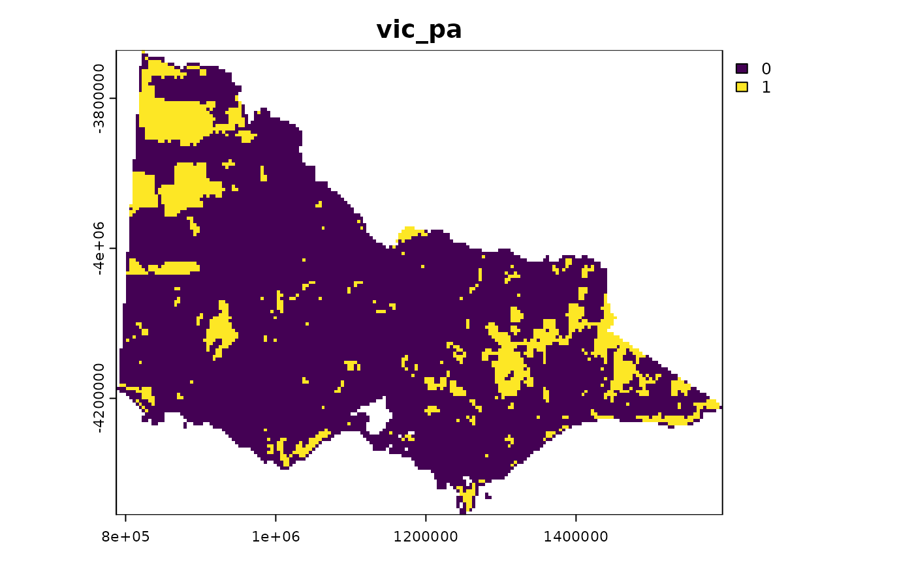

This is a conservation planning dataset for Victoria, Australia
that can be used to generate robust prioritizations.
This dataset was derived from Archibald et al. (2024),
Department of Climate Change, Energy, the Environment and Water (2024),
Global Administrative Areas (2024), and Williams et al. (2020).
For an example of using this dataset, please refer to the
the Example using Victoria, Australia vignette
(vignette("vic-cons-planning", package = "robust.prioritizr")).
Format
get_vic_study_area()sf::st_sf()object.get_vic_cost()terra::rast()objectget_vic_species()terra::rast()objectget_vic_pa()terra::rast()objectvic_species_metadata()tibble::tibble()object
Details
Briefly, this dataset contains 1.2988 × 104 planning units and 18 terrestrial vertebrate species For each species, the dataset contains the present-day spatial distribution for the species as well as projections for the species' future spatial distribution at 4 time periods based on 4 combinations of climate models and scenarios. To account for existing conservation efforts, the dataset also contains the locations of existing protected areas.
The following functions are provided to import the dataset:
get_vic_study_area()A
sf::st_sf()object containing the spatial boundary of the Victoria, Australia (derived from Global Administrative Areas 2024).get_vic_cost()A
terra::rast()object containing the opportunity costs associated with protected area establishment (derived from Williams et al. 2020). This object contains a single layer, and grid cells denote planning units. Cells contain positive continuous values, such that greater values denote greater opportunity costs.get_vic_pa()A
terra::rast()object containing the locations of existing protected areas (derived from DCCEEW 2024). This object contains a single layer, and grid cells denote planning units. Cells contain binary values indicating if existing protected areas cover, at least, 50% of the grid cell or not.get_vic_species()A
terra::rast()object containing the present-day and potential future spatial distributions of terrestrial vertebrate species (derived from Archibald et al. 2024). This object contains a 306 layers, where each layer corresponds to the predicted spatial distribution of a particular species at a particular point in time based on a particular climate scenario. For a given layer, grid cells denote planning units. Cells contain binary values indicating if the species is predicted to be present or absent within the cell.get_vic_species_metadata()A
tibble::tibble()data frame containing information on the species' spatial distribution data (i.e.,get_vic_species()). Here, each row of thedadta.framecorresponds to each layer of species' spatial distribution data, and columns describe different aspects of the layers. This object contains columns with the following values.- id
integerindex values for the layers. E.g., the fifth layer is associated with anidvalue of 5.- id
characternames for the layers. These values correspond tonames(get_vic_species()).- species
characterscientific names of the species associated with the layers.- class
charactertaxonomic classes of the species associated with the layers.- proj
characternames of the climate projections and timesteps associated with the layers. Layers that represent the species' present-day distributions are denoted with a value of"historic_baseline_1990". Also, layers that represent the species' potential future distributions denoted with values of"GCM-Ensembles_ssp126_2030","GCM- Ensembles_ssp126_2050","GCM-Ensembles_ssp126_2070","GCM- Ensembles_ssp126_2090","GCM-Ensembles_ssp245_2030","GCM- Ensembles_ssp245_2050","GCM-Ensembles_ssp245_2070","GCM-Ensembles_ssp245_2090","GCM-Ensembles_ssp370_2030","GCM-Ensembles_ssp370_2050","GCM-Ensembles_ssp370_2070","GCM-Ensembles_ssp370_2090","GCM-Ensembles_ssp585_2030","GCM-Ensembles_ssp585_2050","GCM-Ensembles_ssp585_2070", and"GCM-Ensembles_ssp585_2090". Note that these values provide the same information as thetimestepandscenariocolumns, and are provided to help with subsetting the data.- timestep
numericyear of the datasets used to generate the layers. Layers that represent the species' present-day distributions are denoted with a year of1990, and layers that represent the species' potential future distributions denoted with years of2030,2050,2070, and2090.- scenario
characternames of the climate scenarios used to generate the layers. Layers that represent the species' present day distributions are denoted with"historic_baseline". Also, layers that represent species' future distributions are associated with a particular Shared Socioeconomic Pathway (SSP) and Representative Concentration Pathways (RCP), such as ("ssp126") SSP 1 and RCP 2.6, ("ssp245") SSP 2 and RCP 4.5, ("ssp370") SSP 3 and RCP 7.0, and ("ssp585") SSP 5 and RCP 8.5.- sum
numericnumber of planning units where the species are predicted to be present within each of the layers.
References
Archibald CL, Summers DM, Graham EM, Bryan B (2024) Habitat suitability maps for Australian flora and fauna under CMIP6 climate scenarios. GigaScience, 13:giae002.
DCCEEW (2024), Collaborative Australian Protected Areas Database (CAPAD).
Global Administrative Areas (2024). Database of Global Administrative Areas. Version 4.1. Available at https://gadm.org (accessed on 15 August 2025).
Williams BA, Venter O, Allan JR, Atkinson SC, Rehbein JA, Ward M, Di Marco M, Grantham HS, Ervin J, Goetz SJ, Hansen AJ, Jantz P, Pillay R, Rodríguez-Buriticá S, Supples C, Virnig ALS, Watson JEM (2020) Change in terrestrial human footprint drives continued loss of intact ecosystems. One Earth, 3:371–382.
See also
The code used to prepare this dataset are available online (https://github.com/jeffreyhanson/robust.prioritizr.data),
Examples
# load spatial R packages
library(sf)
#> Linking to GEOS 3.12.1, GDAL 3.8.4, PROJ 9.4.0; sf_use_s2() is TRUE
library(terra)
#> terra 1.8.93
# load data
vic_study_area <- get_vic_study_area()
vic_cost <- get_vic_cost()
vic_species <- get_vic_species()
vic_pa <- get_vic_pa()
vic_species_metadata <- get_vic_species_metadata()
# preview data
print(vic_species_metadata)
#> # A tibble: 306 × 8
#> id name species class proj timestep scenario sum
#> <int> <chr> <chr> <chr> <chr> <int> <chr> <int>
#> 1 1 amphibians-Litoria_spencer… Litori… amph… GCM-… 2030 ssp126 2150
#> 2 2 amphibians-Litoria_spencer… Litori… amph… GCM-… 2050 ssp126 1879
#> 3 3 amphibians-Litoria_spencer… Litori… amph… GCM-… 2070 ssp126 1852
#> 4 4 amphibians-Litoria_spencer… Litori… amph… GCM-… 2090 ssp126 1902
#> 5 5 amphibians-Litoria_spencer… Litori… amph… GCM-… 2030 ssp245 2156
#> 6 6 amphibians-Litoria_spencer… Litori… amph… GCM-… 2050 ssp245 1807
#> 7 7 amphibians-Litoria_spencer… Litori… amph… GCM-… 2070 ssp245 1613
#> 8 8 amphibians-Litoria_spencer… Litori… amph… GCM-… 2090 ssp245 1532
#> 9 9 amphibians-Litoria_spencer… Litori… amph… GCM-… 2030 ssp370 2133
#> 10 10 amphibians-Litoria_spencer… Litori… amph… GCM-… 2050 ssp370 1735
#> # ℹ 296 more rows
print(vic_study_area)
#> Simple feature collection with 1 feature and 1 field
#> Geometry type: MULTIPOLYGON
#> Dimension: XY
#> Bounding box: xmin: 787549.8 ymin: -4355353 xmax: 1595105 ymax: -3735800
#> Projected CRS: GDA94 / Australian Albers
#> # A tibble: 1 × 2
#> study_area geometry
#> <int> <MULTIPOLYGON [m]>
#> 1 1 (((877278.1 -4231443, 881550.9 -4231443, 881550.9 -4239988, 877278…
print(vic_cost)
#> class : SpatRaster
#> size : 145, 189, 1 (nrow, ncol, nlyr)
#> resolution : 4272.776, 4272.776 (x, y)
#> extent : 787549.8, 1595105, -4355353, -3735800 (xmin, xmax, ymin, ymax)
#> coord. ref. : GDA94 / Australian Albers (EPSG:3577)
#> source : vic_cost.tif
#> name : hfp2013_merisINT
#> min value : 1.00000
#> max value : 46.99466
print(vic_species)
#> class : SpatRaster
#> size : 145, 189, 306 (nrow, ncol, nlyr)
#> resolution : 4272.776, 4272.776 (x, y)
#> extent : 787549.8, 1595105, -4355353, -3735800 (xmin, xmax, ymin, ymax)
#> coord. ref. : GDA94 / Australian Albers (EPSG:3577)
#> source : vic_species.tif
#> names : amphi~_2030, amphi~_2050, amphi~_2070, amphi~_2090, amphi~_2030, amphi~_2050, ...
#> min values : 0, 0, 0, 0, 0, 0, ...
#> max values : 1, 1, 1, 1, 1, 1, ...
print(vic_pa)
#> class : SpatRaster
#> size : 145, 189, 1 (nrow, ncol, nlyr)
#> resolution : 4272.776, 4272.776 (x, y)
#> extent : 787549.8, 1595105, -4355353, -3735800 (xmin, xmax, ymin, ymax)
#> coord. ref. : GDA94 / Australian Albers (EPSG:3577)
#> source : vic_pa.tif
#> name : layer
#> min value : 0
#> max value : 1
# visualize data
plot(vic_study_area, main = "vic_study_area")

plot(vic_cost, main = "vic_cost")
 plot(vic_species, main = "vic_species")

plot(vic_pa, main = "vic_pa")

plot(vic_species, main = "vic_species")

plot(vic_pa, main = "vic_pa")
